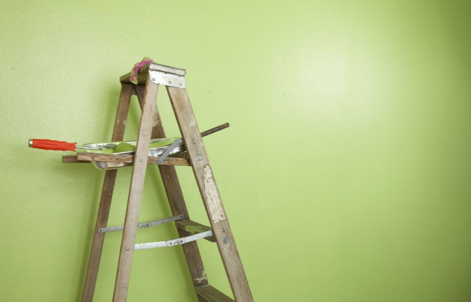

¿No sabes qué color elegir?

¿Te gustaría entrar a tu casa y que el ambiente sea cómodo y agradable de inicio a fin?,
no te preocupes, Telepinturas2000 te aconseja con pequeños tips para hacerlo: Los colores claros reflejan la luz y, por lo tanto,
crean la ilusión de amplitud, por lo que el blanco resulta una excelente alternativa para la sala, por ejemplo… Aunque parezca
increíble hasta el blanco, tiene una gran variedad de tonos para elegir.
Los colores como gris, azul, verde o lila claro harán que las habitaciones reducidas parezcan más extensas por el efecto de
alejamiento visual que generan los tonos fríos. Existen una infinidad de tonos para tu casa, lo mejor es estar a gusto con la
iluminación y combinar a tu verdadero estilo con las mejores opciones que Telepinturas2000 tiene para ofrecerte. Una vez que definas
los colores para pintar tu casa, lo único que te hará falta será visitarnos para que puedas elegir entre toda la variedad de colores
que te ofrecemos.
¿Tus paredes están aptas para ser pintadas?

Telepinturas2000 te explica un poco el cómo preparar tus paredes para ser pintadas, también a identificar si están en óptimas condiciones para su cambio de color. No importa que color elijas, lo importante es que sepas que antes de aplicarla en la superficie que decidas, esta debe estar limpia y sin imperfecciones (es muy importante asegurar que no esté deteriorada o cuarteada para obtener mejores resultados), de esa manera aseguras un mejor acabado y lucirá magnifica la pintura seleccionada. ¿Quién dijo que pintar paredes es una tarea simple? Ten en cuenta que la superficie no debe estar húmeda y que debes eliminar las manchas que puedan modificar el color deseado. Además, es importante colocar la misma cantidad de pintura uniformemente en cada espacio a pintar para obtener mejores resultados.
Pinturas y herramientas para pintar en Barquisimeto: lo que debes saber.

¿Estás buscando pinturas en Barquisimeto? ¿Deseas cambiar los colores de tus paredes? También necesitarás brochas y rodillos. Para pintar en Barquisimeto debes saber donde comprar los materiales que necesitas para hacerlo con calidad y al mejor costo.
Sigue leyendo para conocer algunos consejos prácticos a la hora de comprar pinturas y herramientas para pintar en Barquisimeto:
Haz una lista de las herramientas para pintar:
Existen varios detalles que debes tener listos antes de comenzar a pintar una pared. Los resultados profesionales están en la preparación, en los pasos previos.
Necesitarás destornilladores, para retirar las tapas metálicas que cubren los interruptores de luz y las tomas de corriente, y también algo de pasta para cubrir los pequeños huecos que quedan luego de retirar clavos viejos. Una vez que la pared ya ha sido alisada y lijada, puedes proceder a pintar tu pared.
Elige una pintura blanca de tono matizado:
En todos esos casos, lo que debes saber es que tu mejor opción es elegir una pintura blanca en un tono matizado, preferiblemente un blanco nácar.
¿Por qué es mejor una pintura blanca? Una pintura blanca es indispensable para un correcto acabado luego de una remodelación o construcción, cuando la obra todavía está lisa.
Es un error colocar cualquier color encima del concreto seco que no sea blanco. El acabado se verá sucio y poco profesional. Deben añadirse al menos dos capas de pintura blanca, para obtener la textura ideal.
¿Por qué elegir una pintura blanca nácar? El blanco nacarado es más fácil de combinar con diversas gamas de colores, algo importante a la hora de añadir elementos de arte o decoración.
Consigue ofertas de pinturas en Barquisimeto
Si buscas pinturas en Barquisimeto, en Telepinturas2000 tenemos las mejores pinturas en cuanto a calidad y precio. Durante todo el año, publicamos ofertas en pinturas y contamos con una gran variedad de opciones para diversos usos.
Pregunta ahora mismo a través del chat de atención por las ofertas disponibles en pinturas, te sorprenderá el ahorro que puedes obtener.
Haz de Telepinturas2000 tu proveedor de pinturas y herramientas para pintar en Barquisimeto:
Los mejores precios de pinturas en Barquisimeto, están en Telepinturas2000. Conviértenos en tu proveedor de pinturas y herramientas para pintar en Barquisimeto. Escríbenos por Instagram al @Telepinturas2000c.a
Atenderemos tus dudas, consultas y requerimientos, también queremos invitarte a visitarnos en nuestras dos sedes físicas en Barquisimeto: en San Francisco con carrera 6 y calle 6, Av. Florencio Jiménez entre calle 13 y 14. ¡Te esperamos!